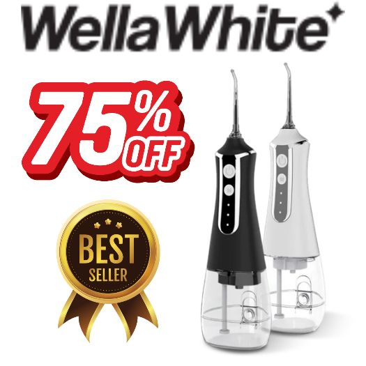
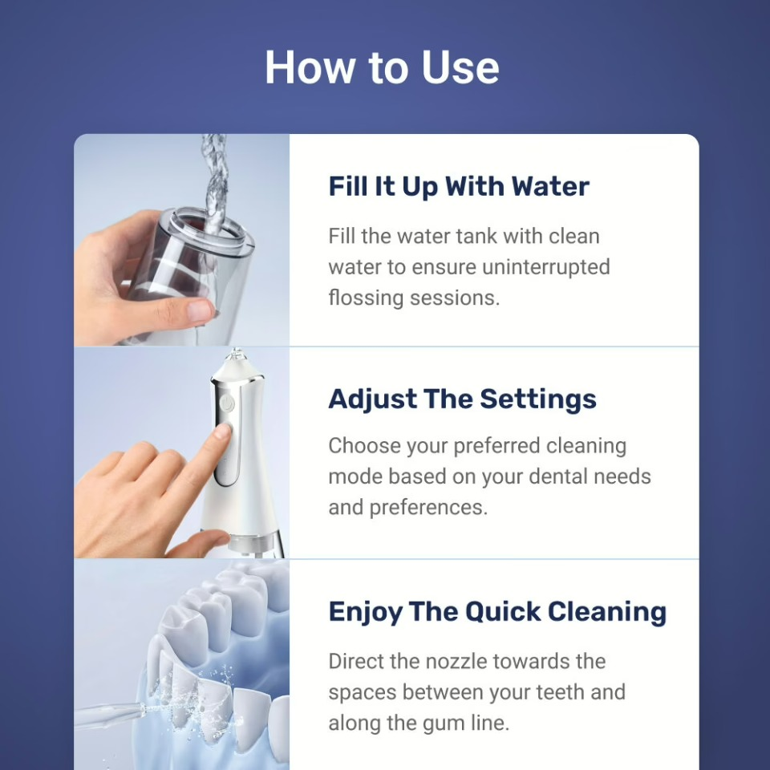
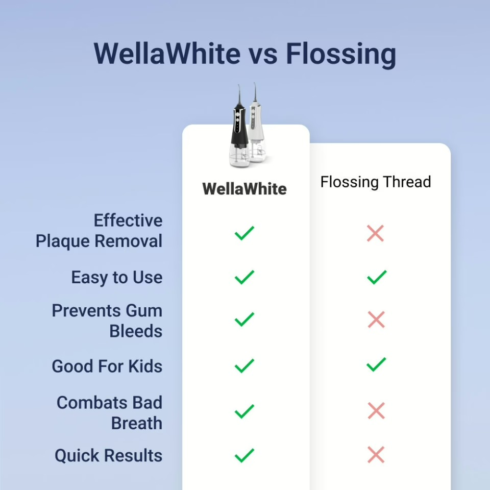

WellaWhite Water Flosser

Clean between teeth and along the gum line with a precise water jet, three cleaning modes and interchangeable nozzles designed for an easier daily flossing routine.
- ✓ Advanced water jet technology for targeted cleaning
- ✓ 3 custom cleaning modes, including a gentler setting
- ✓ Interchangeable nozzles for focused cleaning
- ✓ Rechargeable, portable design with long-lasting battery

Targeted water-jet cleaning for a fresher daily dental routine
WellaWhite Water Flosser is a rechargeable oral-care device that directs a focused stream of water between teeth and along the gum line. The targeted jet is designed to remove plaque and trapped debris from spaces that can be awkward to reach with string floss.
Three cleaning modes let you adjust the feel of each session. A gentler setting supports sensitive teeth and gums, while stronger options provide more vigorous cleaning when you want extra water pressure for stubborn debris.
Interchangeable nozzles help direct the stream to specific areas of the mouth. The focused water jet can move around braces, wires and brackets, making the flosser useful for cleaning around orthodontic appliances as well as between teeth.
The large water tank supports an uninterrupted routine, and the rechargeable battery is designed for everyday convenience. A full charge is stated to provide about 30–40 days of use, helping make WellaWhite practical for the bathroom and for travel.
WellaWhite brings water-flossing into a simple at-home dental hygiene routine: fill the tank with clean water, choose a mode and guide the nozzle between teeth and along the gum line. Regular use supports cleaner teeth, fresher breath and healthier-looking gums.


Choose the water pressure that fits your routine
WellaWhite combines advanced water jet technology with three cleaning modes so you can match the session to your comfort and cleaning needs. Clean Mode is designed for daily plaque removal, Soft Mode delivers a gentler stream for sensitive gums, and Pulse Mode uses alternating water pulses for focused cleaning.
The adjustable modes make the water flosser useful across different parts of the mouth without changing the basic technique. Start at a comfortable setting, guide the nozzle steadily along the gum line and pause between teeth so the water stream can flush away loosened debris.
This controlled approach turns flossing into a quick, repeatable step that can be tailored to sensitive areas, everyday maintenance or more focused cleaning.
Precise cleaning around teeth, gums and braces
The concentrated water stream is designed to reach narrow spaces between teeth and the gum line where food particles and plaque can collect. It cleans without the sawing motion of traditional string floss, making the routine easier to control around tender areas.
For braces and other dental appliances, the targeted jet can be directed around wires, brackets, bridges and implants. Interchangeable nozzles help position the stream where you need it, while the adjustable modes let you choose a gentler or more vigorous setting.
The result is a practical water-flossing routine built around precision: direct the stream, follow the gum line and give extra attention to areas that normally take longer to clean.


Long battery life keeps daily flossing easy to maintain
WellaWhite uses a rechargeable battery designed to reduce frequent charging. The supplied product information states approximately four hours for a full charge and about 30–40 days of use on one full charge.
That extended battery cycle makes the flosser convenient for a daily bathroom routine and for trips, without tying each session to a power outlet. Its portable format helps keep the same dental cleaning routine at home or away.
The large water tank is designed to support an uninterrupted session, so filling, selecting a mode and cleaning can stay simple from start to finish.
Build your flossing routine in three simple steps
Begin by filling the water tank with clean water. Keeping the tank filled for the session allows the jet to run continuously while you work around the teeth and gum line.
Select the cleaning mode that matches your comfort and dental needs. Soft Mode is the gentler option for sensitive areas, while the other settings provide stronger or pulsing water action for everyday and focused cleaning.
Lean over the sink, direct the nozzle between the teeth and along the gum line, and move methodically around the mouth. The targeted stream flushes away plaque and debris as you progress.
1. Fill With Water
Fill the tank with clean water for an uninterrupted flossing session.
2. Choose a Mode
Select the cleaning mode that best matches your comfort and cleaning needs.
3. Clean Along the Gum Line
Guide the nozzle between teeth and along the gum line for a targeted clean.


A cleaner-feeling mouth, fresher breath and healthier-looking gums
Water-jet cleaning is designed to remove plaque and food debris from tight areas that are easy to miss during a quick routine. Directing the stream between teeth and around the gum line helps keep these spaces cleaner and supports a fresher-feeling mouth.
The gentler mode gives sensitive gums a softer cleaning option while still using the same targeted water stream. With consistent use, WellaWhite fits naturally beside brushing as a daily dental hygiene step.
For people focused on a clean, bright-looking smile, the practical benefit starts with thorough dental cleaning: removing trapped debris, maintaining fresh breath and keeping the gum line clean.
Keep the flosser clean and ready for the next session
After each use, empty the remaining water from the tank and rinse the reservoir with warm water. Periodic cleaning with a mild detergent helps keep the tank fresh and ready for regular use.
The nozzles are interchangeable and should be kept clean between sessions. The supplied guidance recommends replacing flosser nozzles every 3–6 months to maintain hygienic, effective water delivery.
WellaWhite is designed to make daily flossing quick and repeatable: refill, select a mode, clean and rinse the device. That straightforward cycle supports consistent dental hygiene without disposable string floss for every session.

Frequently Asked Questions about WellaWhite Water Flosser
Answers about water-jet cleaning, sensitive gums, dental appliances, battery life, frequency of use and maintenance.
How does the WellaWhite Water Flosser work?
WellaWhite uses advanced water jet technology to create a focused stream that removes plaque and debris between teeth and along the gum line. Fill the tank, select a cleaning mode and guide the nozzle around the teeth and gums.
Is WellaWhite suitable for sensitive gums or dental appliances?
Yes. WellaWhite includes adjustable cleaning modes, including a gentler setting for sensitive gums, and the targeted jet can be used around braces, bridges, implants and other dental appliances.
How often should I use the water flosser?
The supplied guidance recommends using WellaWhite once or twice daily as part of a regular oral-care routine. Consistent use supports cleaner teeth, fresher breath and healthier-looking gums.
How long does the battery last on a full charge?
The rechargeable battery is stated to provide about 30–40 days of use on one full charge, making the flosser convenient for everyday use and travel.
How do I clean and maintain WellaWhite?
Empty and rinse the water tank after each use. Periodically clean the tank with a mild detergent, keep the nozzles clean and replace the nozzles every 3–6 months as recommended.